IoC란, 사용자가 만든 객체를 프레임워크 같은 자동화된 도구가 대신 관리해주는 것을 말합니다.
아래와 같이, Java와 같은 Class 스타일의 OOPObject-Oriented Programming 언어는 프로그램을 만들기 위해 직접 생성자를 호출해 객체를 생성해야 합니다.
public class TheClass { ... }
public static void main(String[] args) {
TheClass object = new TheClass();
/* ... */
}하지만 IoC 프레임워크 환경에서는 조금 다릅니다. Smoodi를 예로 들면, 아래와 같이 코드를 적으면 됩니다.
@Module
public class TheClass { ... }가장 눈에 띄는 차이점은
Smoodi에서는
그 덕분에 다른 메소드에서 생성자를 호출할 필요도 없습니다. 심지어 능동적으로 자신의 역할에 맞게 동작합니다.
객체의 생성Create부터 파괴Destroy까지의 과정을 객체 생명주기Object Lifecycle라고 부릅니다. Smoodi는 사용자를 대신해 이 생명주기를 관리합니다.
객체의 생성이란 보다 정확히는, 인스턴스화instantiate를 의미합니다. 생성자가 호출되어, Heap 메모리에 객체가 등록되는 과정입니다.
파괴는 조금 더 복잡합니다. 메모리 해제를 의미하는데, 실제로 메모리가 해제되는 순간은 GCGarbage Collector에 의해 수집Collect되는 때입니다. 하지만 객체는 그보다 훨씬 전에 사용할 수 없게 됩니다. 바로 그 어느 곳에서도 참조하지 않는 시점입니다.
이제 Smoodi에서의 생명주기Lifecycle를 더 구체적으로 정의할 수 있습니다. 객체가 메모리를 할당 받는 순간부터, 다른 객체와의 상호작용이 정지할 때. 즉, 인스턴스화부터 객체에 대한 참조가 없을 때까지입니다.
IoC의 정의를 알았으니, 이제 IoC 컨테이너에 대해 알아볼 차례입니다.
IoC 컨테이너란 IoC를 실제로 구현하는 관리자이며, 그렇게 프레임워크에 의해 관리받는 객체들을 저장하고 있는 저장소입니다.
어떠한 객체에 IoC를 적용하기 위해 Smoodi에서는
그 것을 가능케하는 것이 IoC 컨테이너의 주된 역할입니다.
그리고 이 기술의 핵심은, Reflection입니다.
어떠한 객체를 다루기 위해선 실제 코드에서 클래스에 대한 정보를 참조해야 합니다.
특정 메소드를 호출하거나, 아니면 필드를 불러오려면 실제 클래스가 필요합니다.
Javascript처럼 타입에 관대한 언어는 객체를 변수에 저장할 때 타입을 명시하지 않습니다. 실제로 동작할 때엔 마치
하지만 Java는 조금, 아니 많이 다릅니다. 객체를 변수에 담으면, 그 변수는 꼭 타입 정보를 같이 가집니다. 그리고 객체의 구성 요소를 불러오려면 타입, 즉 클래스를 통해 무슨 구성 요소가 있는 지 확인하고, 그 후에 메모리에서 데이터를 가져옵니다.
다시 말해, 코드 상에서의 추상화는 불가능하단 뜻입니다.